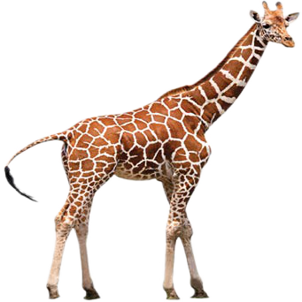

Chunguza, kisha andika shughuli zinazoambatana na tukio la mwenge wa uhuru katika eneo linalokuzunguka.
Mnyama twiga
Mnyama Twiga ni alama ya utambulisho wa Taifa. Alama hii ni kiashirio cha uwepo wa mbuga zenye wanyama mbalimbali nchini Tanzania. Twiga ni mnyama anayeashiria amani licha ya ukubwa wake. Tanzania ina mbuga za wanyama zenye wanyama wa aina tofauti. Kielelezo namba 5, kinawasilisha picha ya Twiga.
Mbuga za wanyama ni fahari ya nchi yetu.

Tanzania ina mbuga za wanyama kama vile, Ngorongoro, Manyara, Mikumi, Tarangire, Ruaha, Serengeti, Jozani (Unguja), Ngezi (Pemba), Rubondo na Saanane. Licha ya mbuga hizi kuna mapori tengefu mengi. Mfano, takribani asilimia 28 ya maeneo ya ardhi nchini yamehifadhiwa kwa ajili ya mbuga na hifadhi za wanyamapori.

Andika orodha ya wanyamapori wanaopatikana nchini Tanzania.
Watalii wengi huja kutembelea mbuga hizi kwa ajili ya kuona wanyama. Watalii hawa hulipatia Taifa fedha za kigeni. Hivyo, kuinua pato la Taifa.